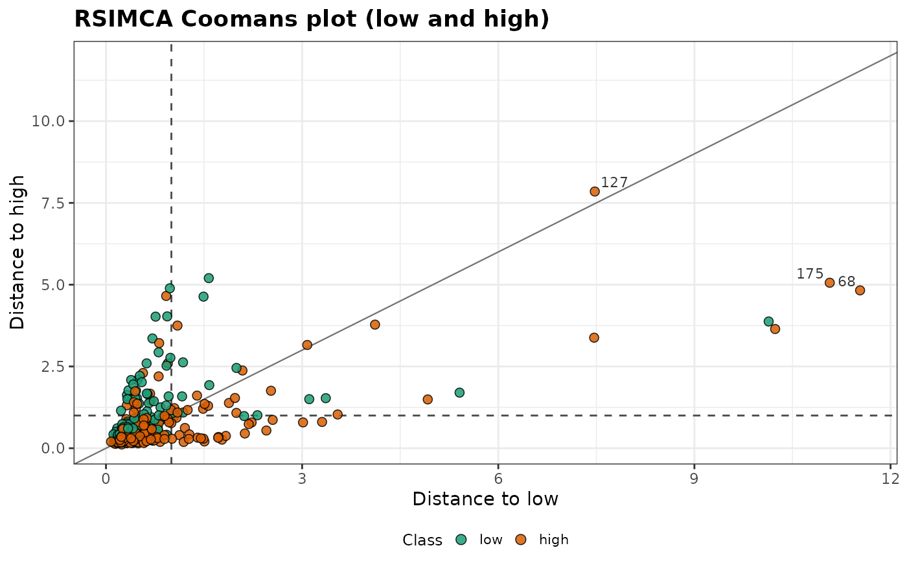
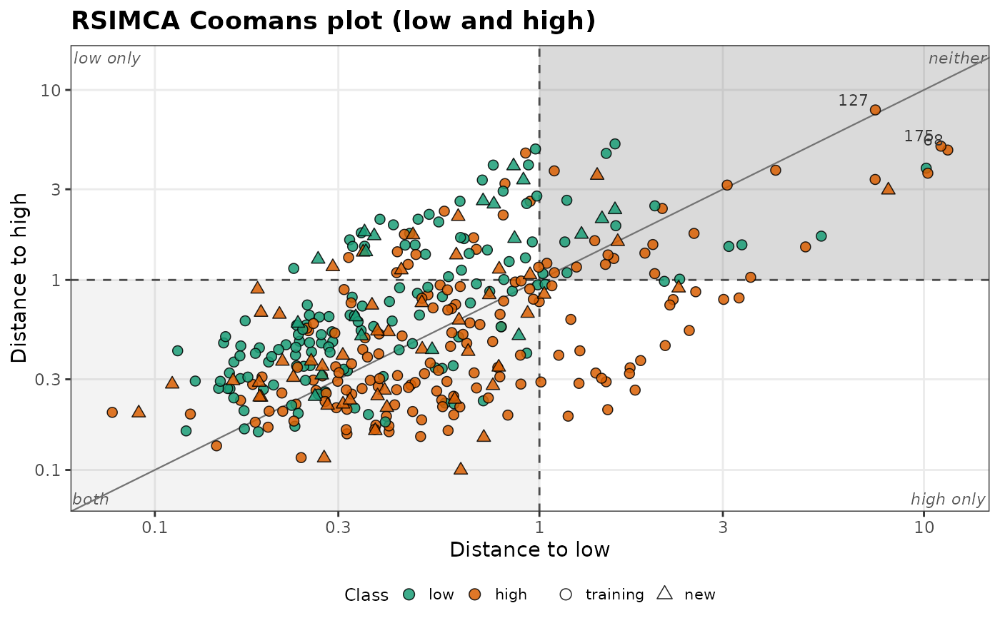

Plots the distance of each observation to one class of a model fitted by
rsimca() against its distance to another class (Coomans plot), with the
class boundaries and the classification boundary. It shows which
observations belong to one class, to both, or to neither, and which are
misclassified.
Usage
plot_coomans(
object,
newdata = NULL,
group = NULL,
classes = NULL,
labels = 3,
log = FALSE,
shade = FALSE,
title = NULL,
...
)Arguments
- object
An object returned by
rsimca().- newdata
Optional new observations to add to the plot (a numeric matrix or data frame with the training variables).
- group
Optional classes of
newdata, to fill their points.- classes
The two classes to plot, on the horizontal and vertical axes. Default is the first two classes of the model.
- labels
The number of observations farthest from both classes to label, among those beyond 1 for both (by their row names, or row numbers). Default is 3; use 0 for no labels.
- log
If
TRUE, use logarithmic axes, which spread out the observations close to the classes when others are far away. Default isFALSE.- shade
If
TRUE, shade the regions of the observations close to both classes and to neither, and name the four regions. Default isFALSE.- title
The plot title.
- ...
Further arguments passed to
ggplot2::geom_point()to style the points, such asalpha(default 0.85),size(2.2),stroke(0.4) orcolour(the outline,"black").sizecan also be a numeric vector with one value per observation (the training observations, then those ofnewdata), to vary the size of the points, with a legend.
Details
The distances are the combined distances \(D_j\) of the classification
rule of rsimca(), built from the score and orthogonal distances to the
robust PCA model of each class, divided by their cut-offs. The dashed
lines are at 1: an observation beyond 1 for a class is beyond at least one
of the cut-offs of this class, and an observation within both cut-offs of
a class is within 1. The diagonal is the classification boundary: the
observations above it are assigned to the class of the horizontal axis,
those below it to the class of the vertical axis.
The four corners of the plot hold the observations close to the class of the horizontal axis only (top left), to the class of the vertical axis only (bottom right), to both (bottom left, where the classes overlap), and to neither (top right, outliers for both classes, or, with more than two classes, members of another class).
The points are filled by their class: the training class for the training
observations, and for new observations (newdata, triangles) the classes
given in group, or "unknown". Observations of a class on the wrong
side of the diagonal are misclassified.
References
Vanden Branden, K., Hubert, M. (2005). Robust classification in high dimensions based on the SIMCA method. Chemometrics and Intelligent Laboratory Systems, 79(1-2):10-21.
Examples
data(forageLIBS)
wl <- suppressWarnings(as.numeric(names(forageLIBS)))
spectra <- forageLIBS[which(wl > 380 & wl < 430)]
level <- cut(forageLIBS$Ca, c(-Inf, 0.6, Inf), labels = c("low", "high"))
set.seed(1)
fit <- rsimca(spectra[1:300, ], level[1:300], ncomp = 3)
plot_coomans(fit)

plot_coomans(fit, newdata = spectra[301:368, ], group = level[301:368],
log = TRUE, shade = TRUE)
